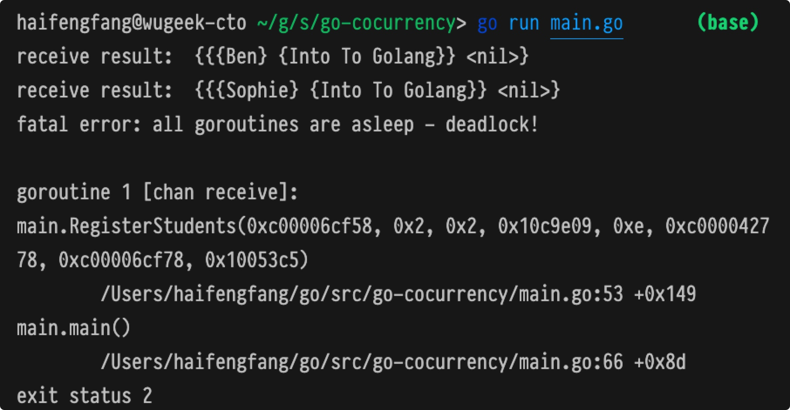
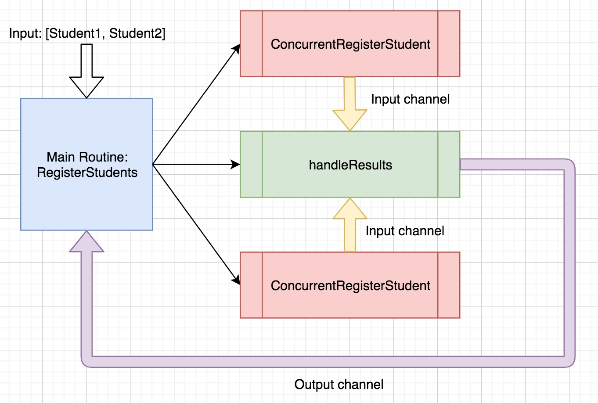
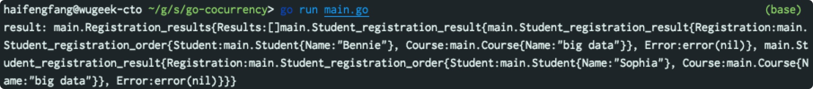

Golang 并发开发实践（2）- 用户并发注册开发实践

目录
In this post, we’ll use goroutines, channels and WaitGroups to process a “bulk user registration” request.
需求场景
Let’s say we’re responsible for building a Go service that registers students in some kind of school management system. An administrator can upload a list of students who have signed up for a given course and our service will register each student for that course. Our courses are, of course, wildly popular, and a student list for a course could be hundreds of students long. We’ll build a function that will accept a list of students to register along with the course for which they are signing up. Our function will spawn a set of tasks that will register students concurrently.
解决思路(非并发版本）
类型定义
// 课程
type Course struct {
Name string
}
// 学生
type Student struct {
Name string
}
// 课程注册请求
type StudentRegistration struct {
Student Student
Course Course
}
// 注册受理结果
type StudentRegistrationResult struct {
Registration StudentRegistration
Error error
}
// 结果集
type RegisterStudentsResults struct {
Results []StudentRegistrationResult
}
受理一个学生的注册课程申请
func RegisterStudent(student Student, course Course) StudentRegistrationResult, error {
// dummy student registration code, doesn't matter what's happening under the hood of `doRegistration`!
registration, error := doRegistration(student, Course)
return StudentRegistrationResult{
Registration: registration,
Error: error,
}
}
受理大量学生的注册申请
func RegisterStudents(students []Student, course Course) RegisterStudentResults {
var results RegisterStudentsResults
for _, student := range students {
studentRegistrationResult = RegisterStudent(student, course)
results.Results = append(results.Results, studentRegistrationResult)
}
return results
}
优化思路（并发版本）
并发受理大量学生的注册申请
func RegisterStudents(students []Student, course Course) RegisterStudentResults {
var result RegisterStudentsResults
for _, student := range students {
// 错误
studentRegistrationResult = go RegisterStudent(student, course)
result.results = append(result.Results, studentRegistrationResult)
}
return results
}
并发版受理单个注册申请
func ConcurrentRegisterStudent
(student Student, course Course, input chan StudentRegistrationResult) {
result := RegisterStudent(student, course)
input <- result
}
使用channel获取注册结果
func RegisterStudents(students []Student, course Course) RegisterStudentsResults {
var results RegisterStudentsResults
input := make(chan StudentRegistrationResult)
for _, student := range students {
go ConcurrentRegisterStudent(student, course, input)
}
for studentResult := range input {
fmt.Println("receive result: ", studentResult)
results.Results = append(results.Results, studentResult)
}
return results
}
测试程序
package main
func main() {
students := []Student{
Student{Name: "Sophie"},
Student{Name: "Ben"},
}
result := RegisterStudents(students, Course{Name: "Into To Golang"})
fmt.Print(result)
}
测试结果（出现死锁）

死锁原因分析：
- 死锁位置：第53行
- 读取通道阻塞：如果通道没有关闭，但是channel没有可读取的数据，它会阻塞在 range 这句位置，直到被唤醒。
解除死锁的方法
解决思路：We need to tell our input channel to close once the spawned ConcurrentRegisterStudent routines have concluded.
如何正确关闭通道：how can we ensure that we close this channel only after those goroutines have finished running?
WaitGroup
A WaitGroup maintains a count of the goroutines its waiting for. We’re responsible for incrementing that count when we want a WaitGroup to keep track of a given goroutine. We’re also responsible for decrementing that count when a given goroutine finishes. Then, a call to WaitGroup’s Wait function in the main execution thread will block that execution until the WaitGroup’s counter is back down to zero.
WaitGroup 跟踪了一组等待结束的协程，调用 wait 方法时，若跟踪的协程数量不为零，则会阻塞，直到跟踪的协程数量变为0.
支持WaitGroup的受理函数（每次生成一个协程，将其加入跟踪集合）
func RegisterStudents(students []Student, course Course) RegisterStudentsResults {
input := make(chan StudentRegistrationResult)
var wg sync.WaitGroup
for _, student := range students {
wg.Add(1)
go ConcurrentRegisterStudent(student, course, input)
}
...
}
如何获知受理协程已经结束
We need a way to read from the input channel in a separate goroutine. This separate goroutine will be responsible for iterating over the range of messages sent to our input channel. Every time it receives a message over this channel, we will know that the goroutine that wrote that message is finished running. This is the moment in time to decrement the WaitGroup’s count.
我们需要创建另外一个协程，主要的作用是：
- 用于读取input通道的内容，每当获得一个input消息，意味着一个受理协程的结束，从而减少跟踪协程集合的中协程的数量。
- 当input关闭后，返回已经收到的所有受理结果
func handleResults(input chan StudentRegistrationResult, output chan RegisterStudentsResults, wg *sync.WaitGroup) {
var results RegisterStudentsResults
for result := range input {
results.Results = append(results.Results, result)
wg.Done()
}
output <- results
}
何时关闭通道
关闭input通道的前提是，所有的受理协程已经结束，即跟踪协程集合为空。只有正确的关闭 input 之后，才能消除 range 通道存在的阻塞情况
func RegisterStudents(students []Student, course Course) RegisterStudentsResults {
output := make(chan RegisterStudentsResults)
input := make(chan StudentRegistrationResult)
var wg sync.WaitGroup
go handleResults(input, output, &wg)
for _, student := range students {
wg.Add(1)
go ConcurrentRegisterStudent(student, course, input)
}
wg.Wait() // Wait until the count is back to zero
close(input) // Close the input channel
results := <- output // Read the message written to the output channel
return results
}
注意：这里 wg 需要传入指针，否则会导致wg.Wait永远等待的问题
何时关闭 output 通道：We need to ensure that the output channel is closed before the RegisterStudents function returns. We’ll add a call to close(output) to the defer stack of the RegisterStudents function
总结
- We establish an input channel, an output channel and a WaitGroup
- We spawn a goroutine to run handleResults. This function is listening for messages over the input channel
- We iterate over the list of students to be registered, incrementing the WaitGroup’s count for each student and spawning a goroutine to do each student registration
- While each goroutine runs, the main execution blocks thanks to wg.Wait()
- Each time a goroutine sends a message over the input channel and finishes running, the handleResults function running in its own goroutine will collect the result and decrement the WaitGroup’s count.
- Once the last ConcurrentRegisterStudent goroutine finishes running, the WaitGroup’s count will be back at zero.
- Our main execution will un-block, calling close(input) to close the input channel.
- Once the input channel is closed, the for loop that is listening for messages over this channel in the goroutine running the handleResults function will stop. That function will then move on to its next step––writing the results to the output channel.
- Those results are read from the output channel back in our main execution
- This read operation is blocking, so we won’t move on to the last line of the function until a message is received. Once we do receive a message over the output channel, the function will return that message

最终版
package main
import (
"fmt"
"sync"
)
// models
type Student struct {
Name string
}
type Course struct {
Name string
}
type Student_registration_order struct {
Student Student
Course Course
}
type Student_registration_result struct {
Registration Student_registration_order
Error error
}
type Registration_results struct {
Results []Student_registration_result
}
// services
func Register_a_student(student Student, course Course) Student_registration_result {
return Student_registration_result{
Registration: Student_registration_order{
Student: student,
Course: course,
},
}
}
func Concurrent_register_a_student(student Student, course Course, output chan Student_registration_result) {
result := Register_a_student(student, course)
output <- result
}
func Handle_results(input chan Student_registration_result, output chan Registration_results, wg *sync.WaitGroup) {
var results Registration_results
for result := range input {
results.Results = append(results.Results, result)
wg.Done()
}
output <- results
}
func Do_register_some_students(students []Student, course Course) Registration_results {
output := make(chan Registration_results)
input := make(chan Student_registration_result)
var wg sync.WaitGroup
go Handle_results(input, output, &wg)
defer close(output)
for _, student := range students {
wg.Add(1)
go Concurrent_register_a_student(student, course, input)
}
wg.Wait()
close(input)
return <- output
}
// Test Main
func main() {
students := []Student{
Student{Name: "Sophia"},
Student{Name: "Bennie"},
}
course := Course{Name: "big data"}
result := Do_register_some_students(students, course)
fmt.Printf("result: %#v\n", result)
}
测试结果
